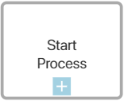
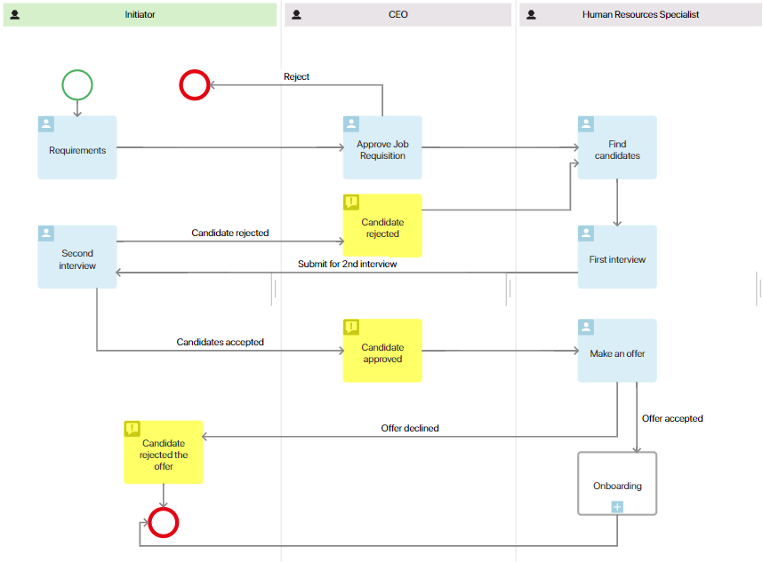
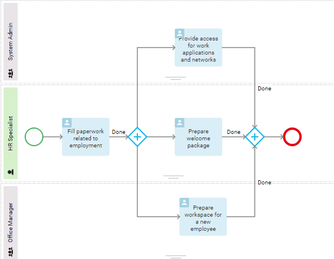
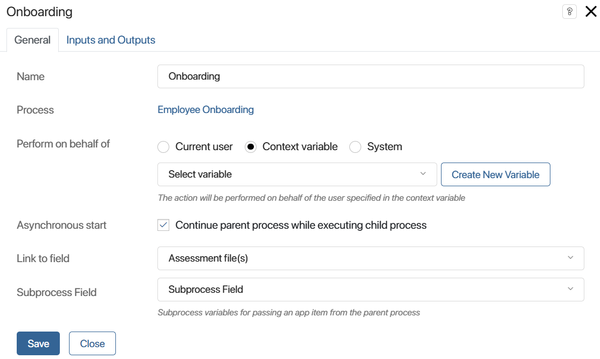
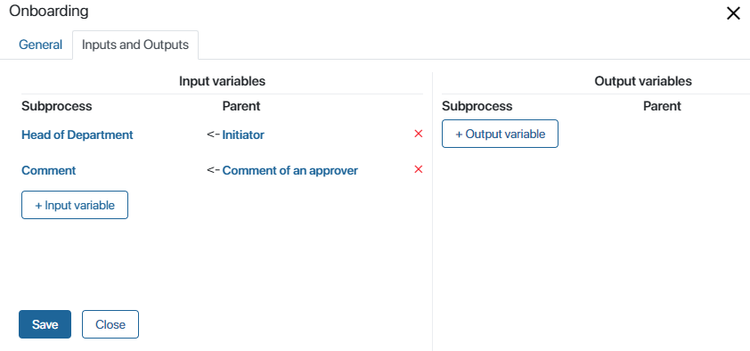
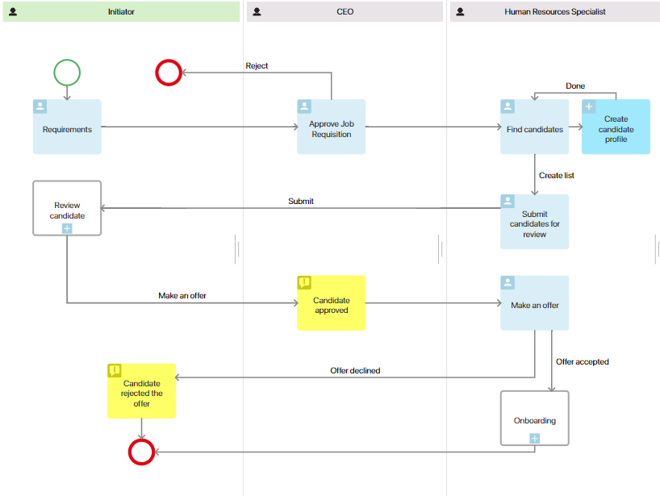
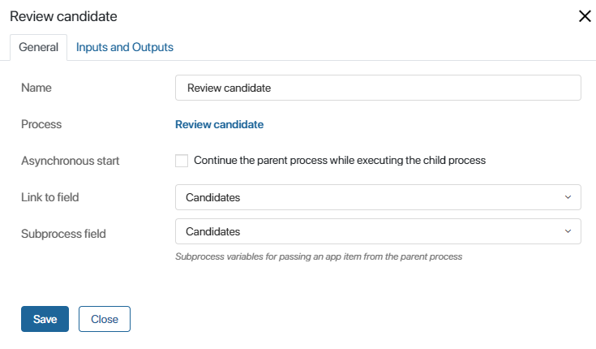

The Start Process activity is used to decompose a process diagram and increase its readability. It allows you to call a nested process within the parent process.
A nested or child process (also called a sub-process) is an independent business process described separately. All the conditions for execution are set within the process: participants, tasks, events, etc., so you can edit it without having to modify the main process.
When a nested process starts, its name appears of the instance summary page of the parent process, on the History tab. Click on the name to open the page of the nested process and track its progress.
By adding the Start Process activity to your process, you are basically adding a link to a complex task that will be executed as a sub-process. You can add several of such sub-processes to the main process.
Also, you can set it up to launch separate process instances for each app item sent to the main process from the nested one.
How to use the activity
For illustration, let's use the the Job requisition process as the main process. During its execution, as soon as a candidate is approved, the Onboarding sub-process starts.

The Onboarding process is modeled separately. All the conditions are set within the process: participants, tasks, events, etc. The process diagram looks like this:

If candidates go through multiple interviews and recruit tests during the selection process, you can remove these steps from the Requisition process and create another nested process instead. This will make the diagram of the parent process easy to read, and candidates will be interviewed and reviewed within a separate process.
Set up the activity
To add and set the activity up:
- Open the diagram of the parent process.
- Drag the Start Process activity to the diagram and place it where the nested process should be started.
- Double-click on the shape to open the settings.
- Fill out the fields on the General and Inputs and Outputs tabs.
General tab

- Name. Enter the name of the sub-process activity that will be displayed on the diagram.
- Process. Select the process that will be called as part of the parent process. Note that only a published process can be selected.
- Perform on behalf of. Select who will be specified as the process initiator on the instance page.
- Current user. The person who started the child process instance.
- Context variable. Select a variable of the Users (one) type from the context process. The employee stored in this variable will be specified as the child process initiator. For example, you can select a user who belongs to the swimlane where the child process is located.
- System. The child process will be performed on behalf of the user selected as the system supervisor.
- Asynchronous start. Select this option if you want the parent process to continue after the start of the child process. If the option is disabled, the execution of the parent process is suspended until the child one is completed.
- Link to field. You can bind the sub-process launch to an App-type variable of the parent process. In this case, events occurring within the sub-process (for example, errors, task reassignment, etc.) will be displayed in the associated activity stream of the bound app. If you select a variable with the Many option enabled, you will be able to launch process instances for several selected app items. To learn more, see Multiple sub-process start;
- Subprocess field. Select a variable from the child process that will store the app item of the parent process. This option becomes available only if you have selected a variable with the Many option enabled in the Link to field field.
Inputs and Outputs tab
You can map context variables in the parent and child processes. Please note that only variables of the same type can be mapped. 
- Input variables. Variables that go from the parent process to the child process when the latter is started.
- Output variables. Variables that go to the parent process from a child process when the latter is ended. Please note that you cannot set up output variables if you have enabled Asynchronous start or have set up multiple start for the sub-process.
In output variables, the Output code field is available. It allows sending the name of the end event of the child process of the parent process, once the child process is completed
Let's say there is sub-process for signing an agreement within the main Procurement process. It has two end events: Original copy received и Original copy not received. In order for the parent process to have the information about the event that the child process ended with, set up the Output code field.
To do that, add a String field to the context of the main process and give it a name, for example, Result. In the output column, specify the Output code variable of the sub-process, and in the Sub-process column specify the Result variable.
Multiple sub-process start
If necessary, you can start several separate sub-process instances for different app items. This is called multiple start. To set it up, you need to select a variable with the Many option enabled in the Start Process activity.
For illustration, let's change our Requisition process. The HR specialist will look for candidates and then create an app item for each candidate in the Candidates app. Then the HR specialist prepares a list of candidates to be sent for approval to the requisition initiator: they add the Candidates app items to the form of the Submit candidates for review task. When they click Submit, the list is sent to the initiator. For each of the app items added to the list, a separate instance of the Review candidates process is started.
During the Review candidate sub-process, the candidates are interviewed and tested. For the person who is accepted for the job, an employee profile is created. Then the parent process continues.

To set this logic up, do the following:
- On the Context tab, create a new variable of the App type. Select the Candidates app and enable the Many option.
- Add the Submit candidates for review task for the HR specialist. Place it after the steps where candidates are found and added to the Candidates app. Open the task settings and add the Candidates variable to the task form.
This task is required so that the HR specialist can select several of app items created on the previous step and add them to the variable. This way the list of candidates for review is created. Another way to send several app items to the process context is by using the Script activity. To learn more about scripts, see BRIX TS SDK.
- After the Submit candidates for review task, place the Start Process activity. In its settings, select the Review candidate sub-process and enable the Asynchronous start option so that the parent process is paused until the child process is completed.
- In the Link with field field, select the Candidates variable that you added in step 1. Also, select the property of the sub-process where the app items from the parent process will be sent to. In our case, these app items are the candidates. Save the settings.

Now, during the parent process, for each process item of the Candidates app listed in the Submit candidates for review task, the Review candidate sub-process will be started. After it is completed, the parent process will continue according to the diagram.
Please note, you can launch maximum 100 instances of the sub-process. It helps prevent endless execution of one step. To bypass this limitation, you can configure an exclusive gateway and a timer to launch instances gradually. Read more about it in the Possible process execution errors article.